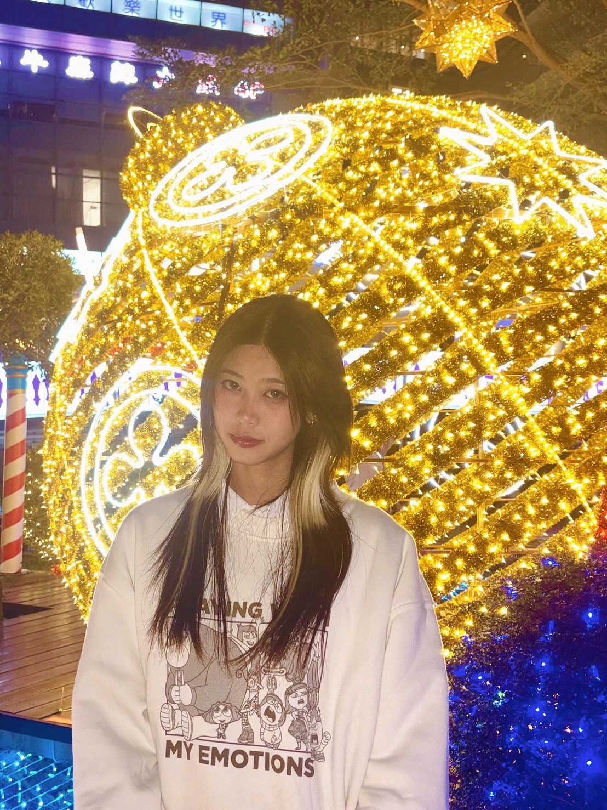
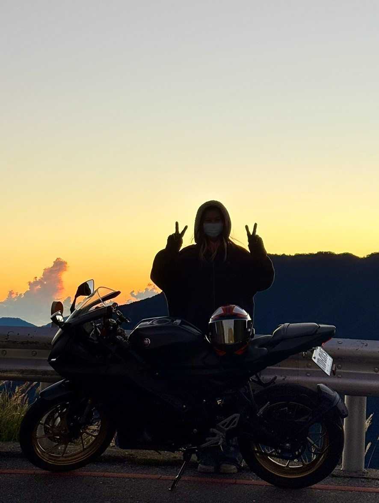

李玨瑩
做一件事，如果不能做到最好，也無法追求極致，那又何必去開始呢？ 人生中有太多選擇和可能性，與其平凡而隨便地完成，不如專注於那些值得投入心力的事。 努力追求極致，不只是為了結果，而是在過程中學會專注、耐心與自我要求。 這樣，每一步都更有意義，也能讓自己變得更穩定、踏實與完整。
做一件事，如果不能做到最好，也無法追求極致，那又何必去開始呢？ 人生中有太多選擇和可能性，與其平凡而隨便地完成，不如專注於那些值得投入心力的事。 努力追求極致，不只是為了結果，而是在過程中學會專注、耐心與自我要求。 這樣，每一步都更有意義，也能讓自己變得更穩定、踏實與完整。
海報製作
社群媒體管理
美編設計
影片剪輯

東南亞學會 ｜ 活動視覺設計
東南亞學程 ｜ 社群宣傳設計
旗山北極殿 ｜ 廟宇文化推廣